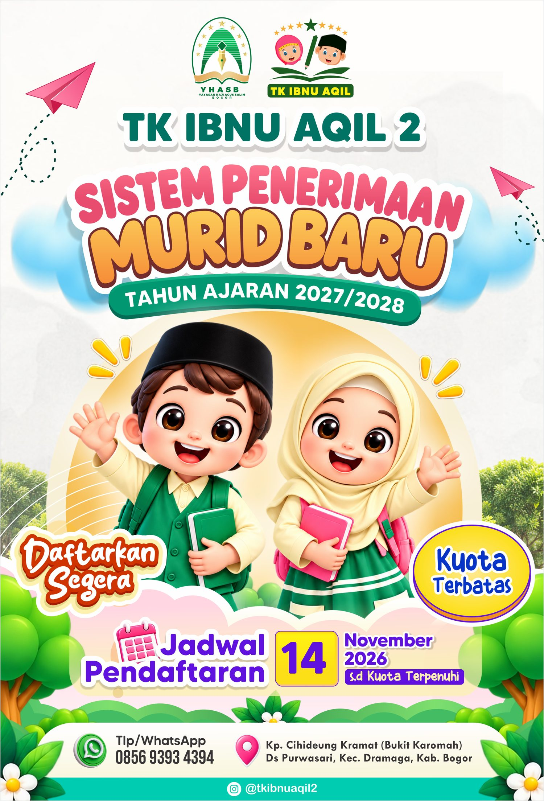
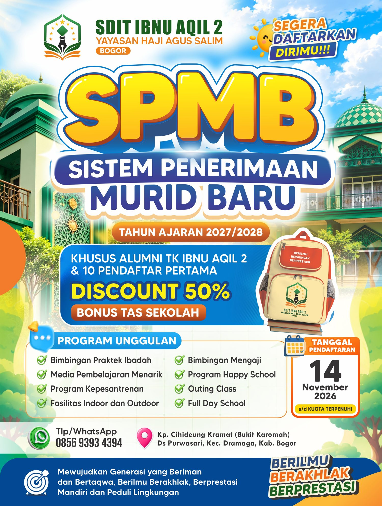

SPMB Tahun Ajaran 2027/2028
Pendaftaran dibuka 14 November 2026 sampai kuota terpenuhi.

14 November 2026Pendaftaran dibuka
08.00-13.00 WIBSenin-Jum'at
Bukit KaromahPurwasari, Dramaga
Kuota terbatasDitutup jika kuota penuh
Alur pendaftaran
- 1
 Cari informasiBaca brosur atau tanya admin lewat WhatsApp.
Cari informasiBaca brosur atau tanya admin lewat WhatsApp. - 2
 Isi formulirFormulir pendaftaran diisi di sekolah.
Isi formulirFormulir pendaftaran diisi di sekolah. - 3
 Serahkan berkasAkta kelahiran, KTP orang tua, KK, dan berkas lainnya.
Serahkan berkasAkta kelahiran, KTP orang tua, KK, dan berkas lainnya. - 4
 Tes dan wawancaraJadwalnya ditentukan oleh panitia SPMB.
Tes dan wawancaraJadwalnya ditentukan oleh panitia SPMB. - 5
 Selesaikan administrasiLengkapi administrasi sebelum batas waktu.
Selesaikan administrasiLengkapi administrasi sebelum batas waktu. - 6
 Resmi diterimaSelamat bergabung di Ibnu Aqil 2!
Resmi diterimaSelamat bergabung di Ibnu Aqil 2!
Persyaratan
TK Ibnu Aqil 2
- Mengisi formulir pendaftaran
- Fotokopi akta kelahiran (2 lembar)
- Fotokopi KTP orang tua/wali (2 lembar)
- Fotokopi kartu keluarga (2 lembar)
- Pas foto ukuran 3x4 (2 lembar)
SDIT Ibnu Aqil 2
- Mengisi formulir pendaftaran
- Fotokopi akta kelahiran (2 lembar)
- Fotokopi KTP orang tua/wali (2 lembar)
- Fotokopi kartu keluarga (2 lembar)
- Fotokopi ijazah TK/PAUD (2 lembar)
Seleksi penerimaan. Tes seleksi dan jadwal wawancara ditentukan oleh panitia SPMB. Calon peserta didik diterima setelah mengikuti tes dan wawancara serta menyelesaikan administrasi sampai batas waktu yang ditentukan.
Biaya pendidikan
Uang bangunan gratis! Khusus SDIT, alumni TK Ibnu Aqil 2 dan 10 pendaftar pertama mendapat diskon 50% dan bonus tas sekolah.
TK Ibnu Aqil 2
| Biaya pendaftaran | Rp25.000 |
| Infaq syahriyah dan kas | Rp100.000 |
| Media pembelajaran (1 tahun) | Rp110.000 |
| Pakaian seragam | Rp550.000 (L) Rp600.000 (P) |
| Jumlah | Rp760.000 (putra) Rp810.000 (putri) |
SDIT Ibnu Aqil 2
| Biaya pendaftaran | Gratis |
| Baju seragam | Rp500.000 (L) Rp550.000 (P) |
| SPP dan kas | Rp100.000/bulan |
| Total | Rp600.000 (laki-laki) Rp650.000 (perempuan) |
Belum termasuk buku LKS.
Unduh brosur

Brosur lengkap juga bisa dilihat: TK halaman depan · TK halaman belakang · SDIT lengkap


Siap mendaftar?
Datang langsung ke sekolah atau tanya dulu lewat WhatsApp. Kami senang membantu.